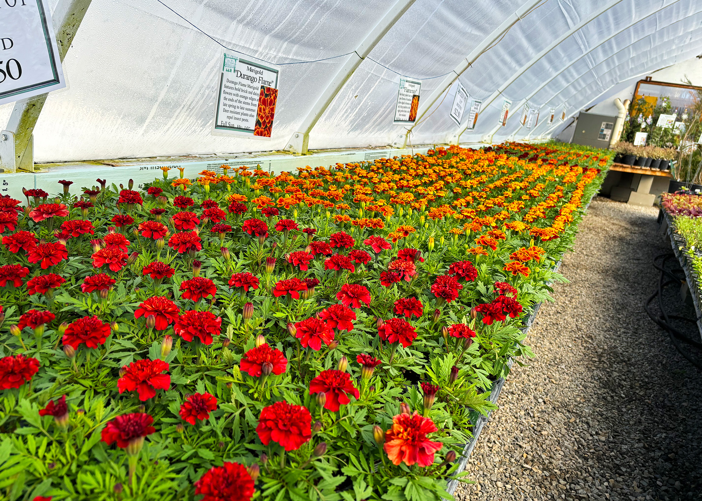

Slideshow

Welcome!
Take a scenic, 40-minute drive from Calgary to the town of Black Diamond and find Vale's Greenhouse. Since its humble beginnings in 1976, the greenhouse has blossomed into what it is today. As you walk in, you will first notice the river stone and wrought iron fence. Follow the twisting walk ways through the beautiful show beds and find our stunning pond area.
The greenhouse is perfect for gardeners of any level, from novice to advanced. You will find what you’re looking for thanks to the large signage and helpful staff to answer any questions you may have.
We grow all our plants on site, which makes us a unique greenhouse in this area. This ensures the plants are hardy for our specific Alberta weather. Our perennials are tested in our large show beds, which will demonstrate how they will work for your particular needs. We have six greenhouses and an impressive perennial area where you will find huge variety of plants.